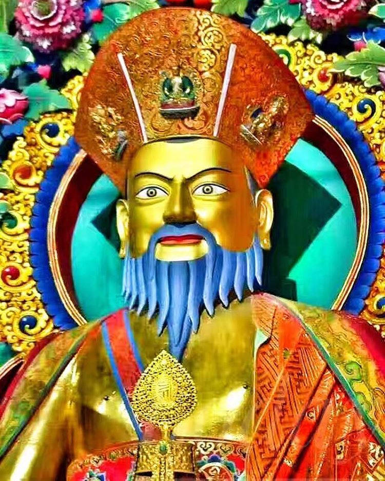

Punakha dzong

History
The Punakha Dzong, also known as Pungthang Dewa chhenbi Phodrang (meaning "the palace of great happiness or bliss"[1][2]), is the administrative centre of Punakha District in Punakha, Bhutan. Constructed by Ngawang Namgyal, 1st Zhabdrung Rinpoche, in 1637–38,[1][3] it is the second oldest and second-largest dzong in Bhutan and one of its most majestic structures.[1][4] The dzong houses the sacred relics of the southern Drukpa Lineage of the Kagyu school of Tibetan Buddhism, including the Rangjung Kharsapani and the sacred remains of Ngawang Namgyal and the tertön Pema Lingpa.
Punakha Dzong was the administrative center and the seat of the Government of Bhutan until 1955 when the capital was moved to Thimphu.[2][4][5] It is listed as a tentative site in Bhutan's Tentative List for UNESCO inclusion.